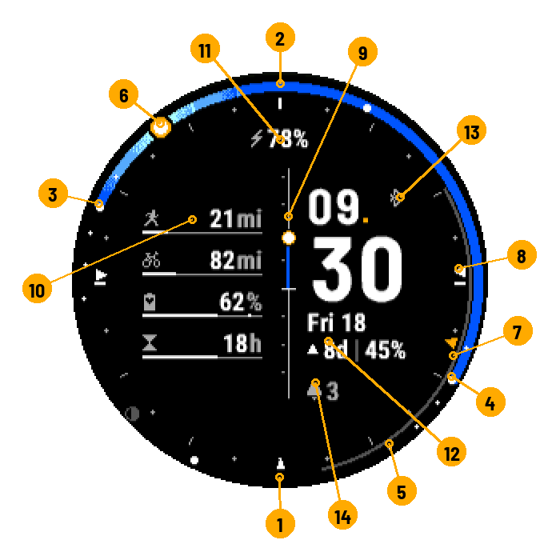

Reading the face

- Midnight, at the bottom of the ring.
- Noon, at the top.
- Sunrise.
- Sunset.
- Full night: end of astronomical twilight.
- The sun, now.
- The moon's arc, from moonrise to moonset.
- Compass: direction of sunrise.
- Central bar: height of the sun.
- Gauges: your data.
- Top field: battery by default.
- Date and moon line.
- Status bar: Bluetooth, location.
- Notifications.
The 24-hour ring
One full turn = 24 hours: midnight at the bottom, 6 am on the left, noon at the top, 6 pm on the right. Ticks at even hours (longer at 0, 6, 12 and 18), dots at odd hours.
The daylight arc. The coloured part of the ring runs from sunrise to sunset. Its colour follows the sky of the moment: very dark blue at night, medium blue early in the morning and late in the day, bright blue in full daylight.
- Sun just below the horizon: the end of the arc on its side lights up — purple during nautical twilight, orange during the blue hour.
- Sun up: a halo surrounds it, golden near the horizon (golden hour), pale higher up. The lower the sun, the wider the halo.
- "Sky gradients" setting: dithered (fine grain, default) or flat steps.
The dots. Large white dots: sunrise, sunset, solar noon (sun at its highest) and solar midnight (at its lowest). Small dots: astronomical (−18°), nautical (−12°) and civil (−6°) twilights, and the end of golden hour (+6°).
The sun. Orange disc with a white core when it is up, white circle when it is down. It moves with the time.
Beyond the Arctic Circle. Polar day: the ring is coloured all the way round. Polar night: no daylight arc, only the twilight dots if there are any.
The Moon
- The grey arc, just inside the ring, runs from moonrise to moonset. It moves on to the next one when the moon is at its lowest.
- The disc shows its phase: new, crescent, quarter, gibbous, full. Light grey when the moon is up, dark when it is down.
- The disc goes over the top of the ring when the moon is up, along the bottom when it is down: from the rise horizon to the set horizon.
- "Moon on the 24h dial" setting: hides the arc and the disc (the moon line stays).
The compass
The triangles on the hour marks are directions, like on a map: north at the top, east on the right, south at the bottom, west on the left. It is not a magnetic compass: the watch face does not know which way your wrist is pointing.
- Small white triangle at the bottom: south, fixed.
- White triangles: where the sun rises and sets today.
- Where the sun is now: solid orange triangle when it is up, white outline when it is down.
- "Compass on the hour marks" setting: sun (default), moon (grey triangles) or none.
The central bar
By default, the height of the sun: the white line is the horizon, ticks every 10°, the small sun sits at its height, and the fill takes the colour of the sky. Other styles: sun and moon, moon only, battery, or plain bar.
Time and fields
The large digits show the time in 24-hour format. Four fields can be set: top, bottom, and two lines under the minutes (by default: battery at the top, date and moon under the minutes).
The moon line:
| Display | Meaning |
|---|---|
▲ 8d │ 47% |
Waxing moon: full moon in 8 days; 47% of the disc lit. |
▼ 5d │ 60% |
Waning moon: new moon in 5 days. |
● 5h |
Full moon in 5 hours (the disc is already drawn full). |
● +4h │ 100% |
Full moon passed 4 hours ago. |
○ +1d |
New moon passed 1 day ago. |
47h, 2d |
Durations: in hours under 48 h, in days above. |
On small screens, the "│" separator is dropped when space runs out.
Other fields specific to this watch face: next sunrise or sunset (7:12), day length (12h26). Watch data: see Watch data.
The status bar
| Icon | Meaning |
|---|---|
 light grey light grey |
Phone connected. |
 dark grey dark grey |
Bluetooth on, phone not connected. |
 |
No known location: the watch face computes for Paris. |
 |
Watch charging (on its own, if the battery is not already shown elsewhere). |
 and a number and a number |
Pending notifications (at the bottom of the right column). |
The gauges
Six layouts: 4 bars, 3 bars, 1 ring and 2 bars, 2 bars, 2 rings, or none. What each value shows: Watch data.
Themes
Classic (white), Sun (orange), Azure (blue): they change the colour of the time, the gauges and the hour dot.